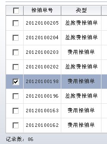

如图效果:

解决方案：
VO里新建Transient属性Checked(Boolean)
表内添加一个column如下：
1
2
3
4
5
6
7
8
9
10
| <af:column id="c10" headerText="选择" width="30" align="center" noWrap="true">
<f:facet name="header" >
<af:selectBooleanCheckbox valueChangeListener="#{backingBean.selectAll}"
autoSubmit="true" id="selectAll"
label="" value=""
</f:facet>
<af:selectBooleanCheckbox label="选中/非选中" id="sbc1" autoSubmit="true" immediate="true"
value="#{row.bindings.Checked.inputValue}"/>
</af:column>
|
1
2
3
4
5
6
7
8
9
10
11
12
13
14
15
16
17
18
19
20
| pupblic void selectAll(ValueChangeEvent valueChangeEvent) {
CIteratorBinding it = ADFUtils.findIterator(REIM_HEADER_ITER);
ViewObject vo = it.getViewObject();
if (valueChangeEvent.getNewValue() != null) {
Boolean selectAll =
Boolean.parseBoolean(valueChangeEvent.getNewValue().toString());
if (!selectAll) {
for (Row temp : vo.getAllRowsInRange()) {
temp.setAttribute("Checked", false);
}
} else {
for (Row temp : vo.getAllRowsInRange()) {
temp.setAttribute("Checked", true);
}
}
RichTable table = (RichTable)JSFUtils.findComponentInRoot("t1");
AdfFacesContext.getCurrentInstance().addPartialTarget(table);
}
}
|
以上即可实现此需求.